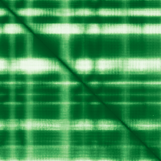

type: protein-evaluation gene: "AP5S1" date: 2026-05-31 tags: [protein-scout, nucleus-cytoplasm, evaluation] status: scored ---
AP5S1 核蛋白评估报告
1. 基本信息
| 项目 | 内容 |
|---|
| 基因名 / 别名 | AP5S1 / C20orf29 |
| 蛋白全名 | AP-5 complex subunit sigma-1 |
| 蛋白大小 | 200 aa / 22.5 kDa |
| UniProt ID | Q9NUS5 |
2. 评分总览
| 维度 | 得分 | 新权重 | 加权后 | 关键证据摘要 |
|---|
| 核定位特异性 | 5/10 | ×4 | 20.0 | GO-CC 有 nucleoplasm IDA:HPA，但 UniProt 主定位为 cytosol/endosome/lysosome membrane |
| 蛋白大小 | 8/10 | ×1 | 8.0 | 200 aa, 22.5 kDa |
| 研究新颖性 | 10/10 | ×5 | 50.0 | PubMed strict=0, broad=0 |
| 三维结构 | 7/10 | ×3 | 21.0 | PDB 8YAB/8YAH EM 结构；AlphaFold pLDDT 80.4 |

| 调控结构域 | 5/10 | ×2 | 10.0 | AP-5 adaptor complex sigma subunit；运输/膜被覆复合体 |
| PPI 网络 | 8/10 | ×3 | 24.0 | AP5M1/AP5B1/AP5Z1/SPG11 强互证；IntAct 有 AP5 complex 和部分核调控相关 partner |
| 加权总分 | | | 133/180** | |
| 互证加分 | | | +1.0 | AP-5 复合体多库互证；GO nucleoplasm 与 DNA repair 功能提示弱核关联 |
| 归一化总分 (÷1.83) | | | 72.7/100** | |
3. 详细分析
3.1 核定位证据
| 来源 | 定位 | 可信度 |
|---|
| UniProt | Cytoplasm/cytosol (ECO:0000269); late endosome membrane; lysosome membrane | Experimental/predicted |
| GO-CC | cytosol IDA:HPA; late endosome/lysosome; nucleoplasm IDA:HPA | Mixed |
| Protein Atlas (IF) | HPA 暂无数据，未获取到 IF 图像或缩略图 | 未确认 |
HPA IF 状态: HPA IF 原图未可靠获取（HPA检索页无可用的subcellular IF原图）。核定位基于HPA localization/reliability + UniProt + GO-CC。 — HPA 暂无数据，未获取到 IF 图像或缩略图。核定位基于 UniProt + GO-CC。AP5S1 的核定位证据主要来自 GO nucleoplasm IDA:HPA，而 UniProt 主定位支持 cytosol/endosome/lysosome，因此定为 nucleus-cytoplasm 且核定位分不高。
3.2 结构与结构域
| 指标 | 数值 |
|---|
| AlphaFold | AF-Q9NUS5-F1 |
| 平均 pLDDT | 80.4 |
| PDB | 8YAB EM 3.26 Å; 8YAH EM 3.30 Å |
| InterPro | IPR029392 |
| Pfam | PF15001 |
3.3 研究现状
| 指标 | 数值 |
|---|
| PubMed strict (Title/Abstract) | 0 |
| PubMed broad | 0 |
| 别名 | C20orf29（未用于 scoring） |
AP5S1 几乎没有以基因名出现的独立文献。UniProt 功能注释称其为 AP-5 复合体组分，可能参与 endosomal transport，并据 PMID:20613862 参与 homologous recombination DNA double-strand break repair。
3.4 PPI 网络（三源综合）
| Partner | Source | Score/Evidence | Relevance |
|---|
| AP5M1 | STRING | 0.999 (exp 0.626) | AP-5 complex subunit |
| AP5B1 | STRING | 0.999 (exp 0.591) | AP-5 complex subunit |
| AP5Z1 | STRING | 0.997 (exp 0.181) | AP-5 complex subunit |
| SPG11 | STRING | 0.961 (exp 0.232) | Lysosomal/transport |
| AP4M1 | STRING | 0.958 (database 0.9) | AP-4 complex |
| SPG11 | IntAct | anti tag coIP (PMID:33961781) | Lysosomal/transport |
| AP5Z1 | IntAct | anti tag coIP (PMID:33961781) | AP-5 complex subunit |
| AP5B1 | IntAct | anti tag coIP (PMID:33961781) | AP-5 complex subunit |
| MRGBP | IntAct | anti tag coIP (PMID:33961781) | Nuclear regulation |
| MORF4L1 | IntAct | anti tag coIP (PMID:33961781) | Nuclear regulation |
| — | UniProt | 无记录互作 | — |
STRING 强支持 AP5M1, AP5B1, AP5Z1, SPG11 等 AP-5/膜运输网络。IntAct 记录 AP5Z1、AP5B1、AP5M1、SPG11、NHERF1 等互作，也含 MRGBP/MORF4L1 等核调控相关 partner，但主要网络仍是 AP-5 adaptor complex。
4. 总体评价
AP5S1 不是经典核蛋白；主定位和 PPI 网络都偏 endosome/lysosome/adaptor complex。但 GO nucleoplasm IDA:HPA 和 DNA repair 注释使其不能简单丢弃。保留为低-中置信度 nucleus-cytoplasm 候选，后续应优先核查 HPA 原图或做内源 IF。
5. 数据来源
- UniProt: https://www.uniprot.org/uniprotkb/Q9NUS5
- AlphaFold: https://alphafold.ebi.ac.uk/entry/Q9NUS5
- PDB: 8YAB, 8YAH
- PubMed: https://pubmed.ncbi.nlm.nih.gov/?term=AP5S1
- Protein Atlas: https://www.proteinatlas.org/search/AP5S1（无 IF 原图）